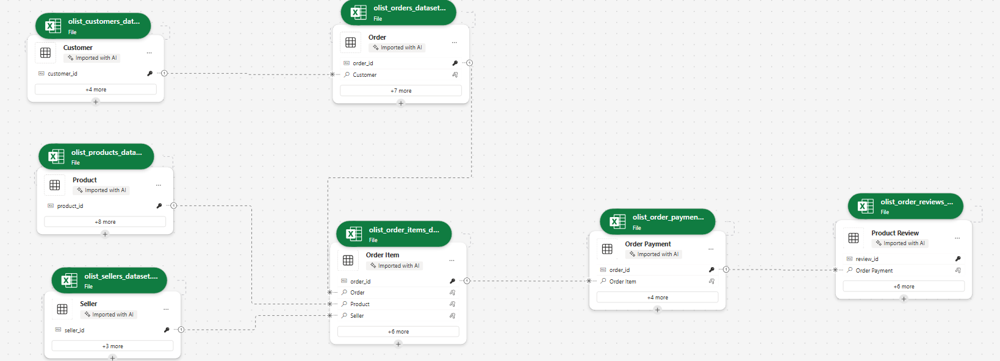

Work
Projects
Technical Skills — Tools & Methods
Disaggregated Failure Rate Analysis: Beyond Demographics
Class failure rates were tracked institutionally, but reported as aggregate figures — masking the underlying factors driving student underperformance. The question was not just how many students were failing, but which conditions were most strongly associated with failure.
Existing reports did not disaggregate failure rates by demographic, engagement, or support dimensions, making it difficult to design targeted interventions. Funding Code was treated carefully — subcategories were aggregated to avoid overidentification of specific demographic groups while still capturing the financial dimension of student risk.
Using Python, I cross-referenced Cognos reports to build a multi-dimensional dataset spanning three indicator groups: Demographic Insights, Educational Engagement, and Background and Support. The analysis combined descriptive statistics, clustering, correlation analysis, and linear regression — with a deliberate bias reduction strategy that avoided individual identifiers and program-specific data.
The dataset was built by cross-referencing multiple Cognos reports — not a single extract. Each indicator group required separate data preparation before the dimensions could be combined for analysis. This foundation also serves as the dimensional structure for a future Power BI implementation, where each indicator group becomes a slicer enabling dynamic filtering.
The chart shows average failed classes per metric across three indicator groups — offering a balanced view among indicators, metrics, and submetrics.
In this recreation using synthetic data, the following patterns can be observed:
- Trend: Steady increase from Residency (2.39) to Funding Code (3.37) across all three groups.
- Demographics: Age Range (2.52) emerges as the most significant demographic factor.
- Engagement: Shaped primarily by Semester (2.74) and Previous Standing (2.89).
- Background & Support: Funding Code (3.37) and Catchment Area (2.95) show the highest average failure rates.

Financial circumstances, represented by Funding Code, emerged as the strongest predictor of class failure — stronger than gender, age, or residency status. This challenges assumptions that demographic identity is the primary risk factor, and points toward financial support systems as a higher-leverage intervention point.
This analytical framework applies directly to healthcare (readmission risk), HR (employee turnover), and credit risk modeling — any domain where disaggregated risk analysis can identify systemic factors behind individual outcomes.
Analysis developed independently within an institutional reporting role at a post-secondary institution in Canada. Recreated with synthetic data for portfolio purposes.
Retention Dataset Audit & ETL Transformation: From Wide Format to BI-Ready Structure
Wide-format datasets are the standard output of legacy administrative systems — efficient for storage and transactional reporting, but structurally limited for dynamic BI analysis. This case documents the audit and transformation of a retention dataset typical of Ontario post-secondary institutions: 985 rows and 33 columns, where semester-retention values are embedded directly in column names rather than stored as rows.
The audit process began by mapping the dataset composition: five descriptive columns (academic year, cohort term, program, campus, ministry codes) followed by 18 retention columns encoding both the semester number (1-6) and student type within the column name itself. This wide structure, while readable as a static report, prevents dynamic filtering by semester or student type without creating individual measures for each column.
Wide-format structure where each semester and student type occupies a separate column — 18 retention columns embedded in column names, making dynamic slicing in Power BI impractical:
| academic_year | cohort_term | program_name | campus | sem1_retained_total | sem1_retained_domestic | … | sem6_retained_international |
|---|---|---|---|---|---|---|---|
| 2026 | 202508 | [Program] | Campus A | 26 | 26 | … | 0 |
985 rows x 33 columns — 18 of which are semester-retention values embedded in column names (SEM1-SEM6 x Total / DOM / INT)
Using Python, the dataset was unpivoted from wide to long format — extracting the semester number from column names into a dedicated field. The result reduces 33 columns to 6, making the data natively compatible with Power BI slicers and DAX measures. Demographic dimensions are added separately via foreign key joins:
| academic_year | cohort_term | program_name | campus | semester | students |
|---|---|---|---|---|---|
| 2026 | 202508 | [Program] | Campus A | 1 | 26 |
| 2026 | 202508 | [Program] | Campus B | 2 | 0 |
| … | … | … | … | … | … |
Long format — one row per program, campus, and semester. What previously required 18 static measures becomes a single Students field.
A foreign key was constructed to enable joins with dimension tables — adding demographic, program, and enrollment context without embedding it in the base retention structure. This separation of concerns keeps the retention layer clean and scalable as additional data sources are connected.
Institutional enrollment data is typically aggregated at the program-cohort level, not at the individual student level. To support cohort tracking across semesters, the dataset was restructured using enrollment data as the foundation — making it possible to distinguish organic retention from other enrollment movements that aggregate reporting does not capture by default. Cohort-level program tracking is developed further in Case 2.
A long-format structure ready to calculate institutional and program-level retention rates dynamically — with a foundation that scales to include additional dimensions as data sources are connected via foreign keys. What previously required 18 static measures becomes a single analytical layer adaptable to any reporting need.
Analysis developed independently within an institutional reporting role at a post-secondary institution in Canada. Dataset structure illustrated with synthetic data for portfolio purposes.
Cohort Attribution Audit: Resolving Hidden Bias in Retention Metrics
Institutional retention is often reported as an aggregate figure, assuming a linear progression where "Semester 1" represents the same starting point for all records. This audit identified a critical Attribution Bias: the mixing of true freshmen with internal transfer students within program-level cohorts.
The conflict arises from mismatched granularity. While an "Institutional Cohort" correctly tracks a student's first entry to the college, a "Program Cohort" often mislabels internal transfers as new students. This ignores the academic maturity and survival traits of transfers, who enter advanced semesters without facing the high-risk barriers of the true first year.
Comparison of data integrity status across analysis levels. The current model assumes a linear path that does not exist for 15-20% of the population:
| Analysis Level | Cohort Definition | Data Integrity Status |
|---|---|---|
| Institutional | First entry to University | VALID |
| Program-Specific | Entry to specific Major | INCONSISTENT |
The lack of data atomicity triggers a domino effect across institutional KPIs, leading to skewed strategic decisions:
- Retention Inflation: Transfers (higher success probability) artificially boost averages, masking the real dropout rate of vulnerable freshmen.
- Time-to-Degree Distortion: Programs appear more efficient by "importing" graduates who completed 50% of their credits in other departments.
- Resource Misallocation: Budget for first-year support is under-prioritized because aggregated data suggests a healthy performance.
I proposed a transition toward Data Atomicity to restore system integrity. This framework enables dynamic segmentation without losing historical context:
- 1. Dual Cohort ID: Separate identifiers for
Entry_Cohort_InstitutionalandEntry_Cohort_Program. - 2. Origin Flags: Mandatory classification as
First-timeorTransfer-in. - 3. Academic Seniority: Normalizing semesters based on "Credits Completed" rather than calendar time.
The "Cohort Contradiction" is a structural data flaw applicable to any sector where aggregated reporting masks the origin or lifecycle of the subject.
- Retail (Churn Analysis): Mixing new customers with reactivated users inflates acquisition success and masks the failure of new-user growth strategies.
- Finance (Accounts Receivable): Labeling refinanced old debt as "new debt" conceals long-term credit risk and distorts cash flow health.
- Mining (Resource Recovery): Aggregating ore grade data across extraction points masks low-yield zones, leading to inefficient processing and inflated forecasts.
Audit developed independently within an institutional reporting role. Findings represent original analytical work on data integrity and cross-industry logic application.
From Audit to Implementation: Atomic Journey Reconstruction
This case is the direct implementation of the Cohort Attribution Audit. The audit identified the structural flaw — misattributed cohort labels masking 15–20% of enrollment events. This case documents how that finding was resolved in practice: a flag pipeline built on the raw enrollment file that reconstructs every student trajectory without modifying the source data.
Institutional enrollment data arrives as a flat transaction file. Each row represents a student-program-semester record, but nothing in the raw data distinguishes a student who dropped out from one who transferred programs, completed their credential, or simply repeated a semester. Aggregate retention formulas — built on Sem N − Sem N+1 subtractions — collapse these distinct events into a single number, hiding the destination.
Rather than filtering or removing records, the transformation was applied directly on top of the raw enrollment file. Every transaction was preserved and labeled through a flag architecture — eight boolean columns that reconstruct the full student lifecycle without altering the audit trail.
The flags enforce a conservation identity at every semester transition: Started = Retained + Moving + Pathway + Incomplete. This identity is what subtraction-based formulas cannot guarantee. A subtraction hides where a student went. A flag reveals it.
Eight boolean columns reconstruct the full student lifecycle. Each flag represents a distinct institutional event:
| Flag | Trigger | Event Type |
|---|---|---|
is_transfer_in | Cohort = 0 | Entry without Semester 1 |
is_repeating | Same semester in a later term | Stalled progression |
is_moving | Left program incomplete → new program | Loss event |
is_pathway | Completed program → new program | Voluntary continuation |
is_subsequent_program | Student had a prior program | Multi-program trajectory |
is_program_incomplete | No return, program ended, not completed | Confirmed attrition |
is_final_record | Latest row per Student + Program + Cohort | De-duplication anchor |
student_completed | Max Semester = Program Length | Completion status |
The flags enforce an accounting rule at every semester transition. Every student that starts a semester has exactly one outcome:
This identity is what traditional retention formulas cannot guarantee. A subtraction hides the destination. A flag reveals it.
Applied at Cohort + Program + Campus + Semester level, the flags produce a flow table where every student is accounted for across the full program lifecycle:
| Cohort | Program | Campus | Semester | Started | Retained | Moving | Pathway | Incomplete | Transfer_In |
|---|---|---|---|---|---|---|---|---|---|
| 202408 | Business Admin | A | 1 | 45 | 38 | 3 | 0 | 4 | 0 |
| 202408 | Business Admin | A | 2 | 38 | 35 | 1 | 2 | 0 | 2 |
| 202408 | Business Admin | A | 3 | 35 | 33 | 0 | 0 | 2 | 0 |
| 202408 | Business Admin | A | 4 | 33 | 33 | 0 | 33 | 0 | 0 |
45 students started. 4 did not return after Semester 1. 3 moved to another program. By Semester 4, the 33 who remained completed the program — all flagged as is_pathway, continuing into their next credential.
The flag architecture produces two complementary views from the same source — consistent by construction, no reconciliation required:
Longitudinal trend reporting by program and cohort. How did cohort 202408 perform over time?
Dimensional drill-down and audit trail. Who left, why, and where did they go?
In Power BI this translates to a retention map — Started → Retained → Pathway by cohort. The difference between is_moving and is_program_incomplete is not visible in a retention percentage, but it determines whether a student represents a resource allocation failure or a natural academic progression. That distinction drives different interventions, different budgets, and different strategic decisions.
This is not a statistical model. It is a formula architecture: reproducible, auditable, and built to be wrong-proof. Every flag is independently verifiable, every outcome traceable to a specific row. The pipeline can be re-run on any future dataset and produce consistent results by construction — applicable to any domain where lifecycle events are currently collapsed into aggregate subtraction metrics.
A Power BI report built on this flag layer — interact with it directly. Filter by cohort, campus, program, and demographic group to explore retention, persistence, and completion outcomes across the full student lifecycle.
Live embed — synthetic data for portfolio purposes. Built with Power BI Publish to Web.
Analysis developed independently within an institutional reporting role at a post-secondary institution in Canada. Dataset structure illustrated with synthetic data for portfolio purposes.
Student Retention Analysis: From Static Reports to Interactive Dashboards
A consistent visual language across three iterations — each preserving the same reading logic: rows as cohorts, columns as semesters, attrition visible inline. What changes is the level of interactivity, not the structure. A stakeholder familiar with the static table can read the interactive dashboard without relearning the format.
Retention reports existed but were not fully actionable — visuals were static screenshots embedded in Word documents, making year-over-year comparison difficult and limiting accessibility for non-technical stakeholders. The underlying dataset added complexity: over 20,000 rows, nearly 50 columns, and unidentified transfer students that distorted program-level metrics.
The source dataset combined dimensions and calculated fields with coding conventions that evolved over time. Records could not be reliably linked back to the original cohort, and transfer students were not separately identified — making it impossible to distinguish institutional retention from program-level retention without first resolving these structural issues.
Rather than rebuilding from scratch, I first understood the existing calculation logic — how retention rates were computed, how cohorts were tracked, and critically, how institutional retention differed from program-level retention. From there, I redesigned the visualization applying churn analysis principles: the student as the equivalent of a customer, semester-to-semester retention as the equivalent of churn.
Transfer students needed to be identified and separated from the original cohort to produce meaningful program-level metrics. The redesign was iterative — each version tested against the question: can a non-technical stakeholder act on this?
An improved tabular view tracking cohort progression across semesters on the horizontal axis, with retention percentages segmented by domestic (RES) and international (NRES) students. The staircase effect makes attrition patterns immediately readable — newer cohorts have fewer semesters of data, while older cohorts show the full retention trajectory.
This format represented a significant improvement in accessibility over previous reports, though it remained static. It served as the analytical and visual foundation for the subsequent implementations.

A visual alternative to the retention table for static reporting contexts. Built with Deneb — a custom visual that renders Vega specifications inside Power BI — each row is an intake cohort, each column a semester. Attrition appears inline as a red delta; retained students as a teal bar. Losses are visible without requiring the reader to compute differences.
The spec is authored in Vega — readable, maintainable, and portable. Slicer interaction works normally. For fully dynamic cross-filtering with other visuals on the page, the native Power BI implementation is the appropriate tool.

The same visual logic now fully interactive. The dashboard enables dynamic filtering by campus, school, program, intake, and demographics (domestic/international, gender, first generation). Two complementary views of the same data:
- Native matrix — the analytical layer with absolute student counts and attrition deltas per semester, filterable by demographic segment.
- Cohort Retention Tree — the clean, stakeholder-facing view showing progression and attrition at a glance.
Additional features: current cohorts vs historical average retention line chart (2021–2024 baseline), KPI cards (Average GPA, At Risk & Probation count, Completion Rate), and a contextual narrative card showing the active filter selection. Institutional and program-level retention are presented as separate metrics — a distinction that requires resolving transfer student records before any visualization is possible.
Live embed — synthetic data for portfolio purposes. Built with Power BI Publish to Web.
This analytical approach mirrors churn analysis in business intelligence — applicable to SaaS customer retention, patient follow-up in healthcare, employee retention in HR, or client persistence in financial services.
Visual recreated with synthetic data for portfolio purposes. Analysis developed independently within an institutional reporting role at a post-secondary institution in Canada.
Academic Standing Transition Matrix: Measuring the Real Impact of Early Alerts
Institutions implement academic alert systems but rarely have a method to measure whether those interventions actually changed student trajectories. Reports show who is at risk — but not whether the system moved them.
Using Python, I redesigned the academic standing dataset by assigning each student two states: their standing at the start of the semester and their standing at the end. This creates a transition matrix — borrowed from data science and actuarial modeling — that makes movement between states visible and measurable.
The transformation also serves as a foundation for building risk indices when enriched with campus, demographic, program, and course-level parameters — enabling contextual aggregation that reduces individual identification bias.
The heatmap shows student transitions across five academic standing states — Academic Intervention, Academic Probation 1-3, and Good Standing. Each cell represents the number of students who moved from one state (previous semester) to another (current semester). The diagonal represents students who maintained their standing. Off-diagonal cells reveal movement in both directions.

The transformation produces a three-column dataset — ready to load directly into Power BI as a matrix table or Sankey chart:
| Previous_Standing | Current_Standing | Student_Count |
|---|---|---|
| Academic Intervention | Academic Intervention | 31 |
| Academic Intervention | Academic Probation 1 | 14 |
| Academic Intervention | Academic Probation 2 | 3 |
| ... | ... | ... |
| Good Standing | Good Standing | 1,985 |
Sample structure — synthetic data for illustration purposes.
Applying the same transformation consistently across academic periods generates historical metrics — enabling the institution to track whether recovery rates are improving and whether interventions actually shifted trajectories over time.
When results are aggregated by context — program, campus, semester, or demographic group — rather than at the individual level, the matrix reduces identification bias. Risk becomes a property of the learning environment, not a label assigned to the student. This allows institutions to ask a fundamentally different question: not which students are failing, but under which conditions does failure concentrate.
This dataset structure feeds directly into Power BI as a Sankey chart, enabling dynamic filtering by campus, program, demographics, and semester. The model below is a working implementation built on mock data — interact with it directly:
Live embed — mock data for portfolio purposes. Built with Power BI Publish to Web.
Analysis developed independently within an institutional reporting role at a post-secondary institution in Canada. Recreated with synthetic data for portfolio purposes.
Comprehensive Program Report: From Static Documents to BI Dashboard
Many educational institutions are required to conduct Comprehensive Program Reviews (CPR) — a systematic, multi-year evaluation of program effectiveness, student outcomes, and strategic alignment. Historically delivered as static Word or PDF documents, these reports presented data descriptively with no analytical framework. This pilot applied a market intelligence lens to four programs, using data from a Student Information System (SIS) and government labour market sources to assess competitive positioning, enrolment conversion, and graduate employment outcomes.
The existing reporting format had three core limitations. First, raw tables with no aggregation or contextual framing — data existed but said nothing. Second, no analytical questions — data was presented without a narrative or decision-making lens. Third, no interactivity — stakeholders could not explore the data by program, year, or demographic. The result was a document that described what happened but offered no insight into why it mattered or what to do next.
A Business Intelligence framework was applied to transform static reporting into an interactive, metrics-driven dashboard — structured around four analytical questions:
- Market Positioning — How does the institution compare against provincial competitors in confirmed applications and enrolment?
- Conversion Efficiency — What percentage of confirmed applicants actually enrol, and how does this vary by program?
- Student Profile — Who are the students, and has that profile shifted over time?
- Labour Market Alignment — What is the employment outlook and wage trajectory for graduates?
Four core metrics structure the analysis: Market Share, Conversion Rate, Withdrawal Rate, and Provincial Average — each calculated dynamically and responsive to active filters.
Metrics developed:
| Metric | Formula |
|---|---|
| Market Share | Home Institution / Provincial Total |
| Conversion Rate | Enrolment / Confirmed Applications |
| Withdrawal Rate | Withdrawn / (Registered + Withdrawn) |
| Provincial Average | Provincial Total / Distinct College Count |
| Top Competitor | TOPN(1, excluding Home Institution, by volume) |
| Dominant Student Profile | Most frequent value per demographic dimension |
Dynamic filtering patterns:
- Context-aware measures — metrics respond to Transaction slicer using SELECTEDVALUE
- Forced inclusion — TOPN + BLANK() pattern ensures Home Institution always appears in competitive rankings
- Cross-table filtering — CALCULATETABLE + IN filters student demographics through enrolment records
- Field Parameters — single slicer dynamically switches the demographic dimension displayed
- Dynamic titles — SWITCH + SELECTEDVALUE generates context-aware titles based on active filters
This pilot was built without a formal data mart — sourced, transformed, and modelled directly in Power BI. While functional as a proof of concept, a production implementation would require a structured data mart. This pilot served as the requirements specification for that architecture — defining the analytical questions, metrics, and data relationships a data mart would need to support.
Working implementation built on anonymized mock data — interact with it directly:
Live embed — anonymized mock data for portfolio purposes. Built with Power BI Publish to Web.
Redesigned static reporting visuals were subsequently adopted in institutional CPR and similar reports. This pilot extended that work — adding interactivity, analytical metrics, and a BI framework as a proof of concept for a data-driven approach.
The analytical patterns developed here are directly transferable to any domain involving program or product performance benchmarking. The core framework — market context → conversion efficiency → customer profile → outcome alignment — applies wherever organizations need to move from descriptive reporting to analytical decision-making.
- Healthcare — comparing service utilization rates across regional providers to identify underperforming care pathways.
- Retail — benchmarking store conversion and withdrawal rates against regional or national averages to guide resource allocation.
- HR Analytics — tracking employee retention and demographic shifts across departments to identify systemic turnover patterns.
- Financial Services — monitoring product conversion funnels (application → approval → activation) to optimize acquisition strategy.
Pilot presented to institutional leadership as a proof of concept. Dashboard rebuilt with anonymized mock data for portfolio purposes.
Strategic Enrolment Management: From Static Reports to BI Dashboard
Strategic Enrolment Management (SEM) is a data-driven framework used by educational institutions to attract, retain, and graduate students effectively. SEM decisions — such as program capacity adjustments, recruitment targeting, and retention interventions — rely heavily on enrolment data spanning multiple years and dimensions. Historically, this analysis was delivered through static Word or PDF reports presenting raw tables without synthesis or analytical framing. This pilot assessed the overall health of an institution's enrolment pipeline using internal cohort data, provincial waitlist records, and regional catchment data.
The existing reporting format had three core limitations. First, data was presented as raw tables across disconnected reports with no synthesis. Second, numbers were shown without a decision-making lens — no analytical questions were being asked. Third, stakeholders could not explore data by program, campus, year, or student type. The result was a reporting ecosystem that described what happened but offered no insight into why it mattered or what to do next.
A Business Intelligence framework was applied to transform static enrolment reports into an interactive, multi-dimensional dashboard — structured around five analytical questions that address demand, capacity, trends, student retention, and competitive positioning:
- Unmet Program Demand — Which programs have more qualified applicants than available seats, and where do unplaced students go?
- Capacity Pressure — Are we expanding capacity at the pace of demand, and which programs face the highest competition for available seats?
- YOY Enrolment Decline — Which programs are experiencing sustained enrolment decline, and how severe is the trend?
- Student Loss by Stage — How many students never arrive after enrolling, and how many start but don't complete their program?
- Catchment Area Analysis — How many local students are enrolling in competitor institutions — for programs we offer and programs we don't?
Seven metrics structure the analysis — each calculated dynamically and responsive to active filters.
Metrics developed:
| Metric | Formula |
|---|---|
| Waitlisted per Available Seat | Total Waitlisted / Max Seats |
| Priority Loss Rate | 1st & 2nd Choice Lost / 1st & 2nd Choice Waitlisted |
| Demand Gap | 1st & 2nd Choice Waitlisted − Max Seats |
| YOY Decline (Variable) | Average of years with actual decline |
| YOY Decline (Fixed) | Sum of negative YOY changes / 10 years |
| No-Show Rate | 1 − (SEM1 Enrolment / Total Start) |
| Final Semester Attrition | 1 − (Final SEM Enrolment / SEM1 Enrolment) |
Dynamic filtering patterns:
- Cross-filtering — bar chart selection dynamically updates line chart to show program-level trends
- Context-aware TopN — TOPN + BLANK() pattern ensures relevant programs always appear regardless of ranking position
- Student type toggle — slicer switches between All, Domestic, and Indigenous student views across all metrics
- 3-Year Summary — DAX pattern using MAXX + TOPN + SUMMARIZE to surface the most impacted program over the last 3 years
This pilot was built without a formal data mart — data was sourced from multiple disconnected systems and modelled directly in Power BI. This pilot defined the analytical requirements a production data mart would need to address.
Working implementation built on anonymized mock data — interact with it directly:
Live embed — anonymized mock data for portfolio purposes. Built with Power BI Publish to Web.
Visualizations developed during the exploratory phase of this work were subsequently adopted in institutional SEM and related static reports. This pilot extended that work — adding interactivity, analytical metrics, and a BI framework as a proof of concept for a data-driven approach to enrolment management.
The analytical patterns developed here are directly transferable to any domain involving demand forecasting, capacity planning, and customer pipeline analysis. The core framework — demand → capacity → trend → attrition → competitive positioning — applies wherever organizations need to move from descriptive reporting to strategic decision-making.
- Healthcare — tracking patient waitlists, capacity utilization, and no-show rates by clinic or service to optimize resource allocation.
- Retail / Hospitality — analyzing booking demand versus available inventory and identifying lost customers by region.
- HR Analytics — monitoring candidate pipeline attrition from application to hire, and regional talent competition.
- Financial Services — tracking product application funnels and identifying where potential customers drop off before conversion.
Visualizations adopted in institutional reports. Dashboard rebuilt with anonymized mock data for portfolio purposes. Numerical values are randomized but calibrated to reflect realistic institutional scales.
Custom Visual Explorations: Cohort Retention Tree & Temporal Sankey
Deneb is a custom visual for Power BI that renders Vega-Lite specifications directly on the canvas. It extends what Power BI can display natively — but requires authoring the visual spec manually, understanding its interaction limitations, and building the dataset structure the spec expects. These two explorations document that process: what each visual does, where it works, and where it doesn't.
Power BI's native visuals cover most analytical needs — but two recurring scenarios expose their limits: dense cohort tables that sacrifice readability for completeness, and flow diagrams that require filters to navigate time instead of showing it directly. Both explorations originated in an institutional analytics context but are built on frameworks with direct cross-industry applicability — the Temporal Sankey is adapted from an HR workforce mobility visualization by Andrzej Leszkiewicz (RWFD HR Cross-Functional Mobility).
A clean, minimal alternative to native matrix tables for cohort tracking. Each row is an intake cohort; each column is a period. Attrition is shown inline as a red delta, retained units as a green bar. The visual is authored in Vega-Lite spec — readable, maintainable, and adaptable to any domain where cohort progression needs to be communicated clearly. Slicer interaction works normally; cross-filtering with other visuals on the page is a known Deneb limitation.
A time-aware alternative to the standard Sankey diagram. Instead of relying on filters to navigate across periods, the time dimension is built directly into the horizontal axis — showing retention, internal movement, and exits simultaneously across consecutive periods. Each flow is traceable to individual record IDs. Best used with level filters to control visual density; tooltip support adds a detail layer without cluttering the main view.
The same visual logic applies wherever entities move through states over time:
- HR & Workforce Analytics — employee mobility across departments, roles, or seniority levels by hiring cohort; tracking lateral moves, promotions, and exits simultaneously.
- Customer & Subscription Analytics — cohort retention by acquisition period; identifying at which stage customers churn and where they go.
- Healthcare — patient progression through treatment stages by intake cohort; readmission and dropout patterns across longitudinal programs.
- Manufacturing & Operations — tracking units, batches, or suppliers moving between process stages over time.
- Education & Training — student or participant flow across program levels, including movement toward advanced or modular credentials.
- Both visuals are authored in Vega-Lite spec inside Deneb — maintainable and version-controllable outside Power BI.
- Deneb visuals do not support cross-filtering with native Power BI visuals on the same page.
- The Temporal Sankey requires a purpose-built dataset with a previous/current state per record per period — not compatible with standard transactional flat files without transformation.
- Cross-filter behavior between the Temporal Sankey and other visuals has not been fully tested — requires dedicated validation before production use.
Both visuals are embedded below — interact directly with the Cohort Retention Tree and the Temporal Sankey using the report navigation.
Live embed — synthetic data for portfolio purposes. Built with Power BI Publish to Web.
Explorations developed independently within an institutional reporting role at a post-secondary institution in Canada. Adapted from cross-industry frameworks — applicable beyond the education domain. Synthetic data for portfolio purposes.
Early Alert System (Risk Assessment): A Multilevel Business Intelligence Ecosystem
The Ontario postsecondary sector faces a critical barrier: functional data silos and a lack of identity-based administrative data (HEQCO 2022). Current practices—often relying on static, disconnected reports—create analytical silos and inherent bias by focusing exclusively on the student (Micro level) in isolation. This fragmented approach fails to identify systemic bottlenecks and the diverse challenges of underrepresented populations, ignoring the interplay between the learner, the curriculum, and the institution.
More than a simple warning tool, this ecosystem transforms limited administrative data into a comprehensive analytical engine supporting multiple institutional workstreams. This framework bridges data gaps through a specialized Multidimensional Data Mart that integrates Historical, Real-time, and Forecast data.
- Student Success: Early Warning Systems (EWS) and intervention tracking.
- Enrollment Management: Real-time monitoring and trend forecasting.
- Academic Quality: Identification of curricular bottlenecks and teaching performance.
- Equity & Access: Identity-based reporting and bias-reduced assessments aligned with provincial standards.
The system consolidates data from institutional warehouses through an ETL process into a specialized Educational Data Mart, implemented as a Constellation Schema that integrates three types of information — historical, real-time, and forecast data — segmented into multidimensional domains covering partial grades, enrollment trends, teaching competencies, retention, and graduation outcomes. Designed for monitoring, following up, predicting, and analyzing results, the analytical layer feeds into an interactive Power BI environment where threshold-based alerts trigger early intervention workflows coordinated across advisors, faculty, and student success teams.

The Data Mart is implemented as a Constellation Schema in Power BI — four fact tables (Enrollment, Retention, Grades, Graduation) sharing dimension tables across Student, Faculty, Course, and Calendar. This structure enables cross-domain analysis without data duplication.

The architecture is strategically designed to answer the four critical questions for equitable access:
- Who: Student Demographic Dimensions (monitoring).
- What: Academic Performance (Grades & Enrollment) (following up).
- Where/How: Structural Factors (Teaching & Curriculum) (predicting).
- Outcome: Long-term Success (Graduation & Retention) (analyzing results).
The multilevel nested analytics approach is validated by research from Politecnico di Milano, acknowledging that dropout probability is highly conditional on program-specific variables. Additional frameworks draw on UCSC-Chile's multilevel model and Purdue University's Course Signals risk predictor research.
Independently developed proposal based on validated research. Not institutionally adopted — the initiative and design represent original analytical work developed within an institutional reporting role at a post-secondary institution in Canada.
Adidas US — Sales & Pricing Analysis
Public Kaggle dataset of 9,648 rows covering Adidas US sales across 2020–2021. The original dataset exists as exploratory data analysis (EDA) in Python notebooks — descriptive visualizations with no analytical framework or business decision orientation. This project was deliberately developed outside the primary domain of post-secondary education to demonstrate the transferability of the same BI analytical framework to a commercial retail context.
The dataset does not include list prices, competitor benchmarks, or discount structures — limiting the analysis to descriptive pricing intelligence: revenue per unit as a price proxy, seasonal price variation, and retailer pricing gaps. Price optimization — elasticity modeling and optimal price point simulation — is outside the scope of the available data.
No analytical questions guiding interpretation. No pricing analysis — revenue per unit, seasonal price variation, and retailer pricing gaps were unexplored. No profitability lens — margin by product, region, and channel was invisible. No interactivity — stakeholders could not explore by geography, channel, or product.
Four-page interactive dashboard structured around five analytical questions:
- "How has operating margin evolved quarter over quarter across 2020–2021?"
- "Which regions, states, and sales channels generate the most revenue?"
- "Which products command the highest price per unit — and does pricing vary seasonally or by retailer?"
- "Are the best-selling products also the most profitable, or is there a trade-off between volume and margin?"
- "Where and what generates the most profit — not just revenue?"
Key Metrics: Total Sales, Operating Profit, AVG Operating Margin, Revenue per Unit, YOY Sales Growth, Units Sold
DAX Patterns: DIVIDE for margin calculations, MAXX + TOPN + SUMMARIZE for dynamic top performers, SELECTEDVALUE for context-aware narrative cards, Field Parameters for dynamic geographic granularity
Dataset retrieved from Kaggle. Final layout, color palette, and design are adapted for the target platform (SharePoint or embedded app) upon deployment.
Demonstrates transferability of the same BI analytical framework — analytical question framing, Python data preparation, DAX dynamic measures, and cross-filtering interactivity — from the post-secondary education domain to a commercial retail context.
Built on a public Kaggle dataset. No institutional or proprietary data involved.
Factory OEE & Downtime — Manufacturing Performance Dashboard
Public Kaggle dataset (CC0 Public Domain) originally designed for predictive maintenance tutorials and machine learning feature engineering — not for operational dashboards. This project deliberately repurposed it to answer a different question: can a structured BI dashboard be built on top of a PdM-oriented dataset to deliver operational manufacturing intelligence?
The dataset generates minute-by-minute synthetic data for a two-machine production line using a companion Python notebook. This case also demonstrates transferability of the same analytical framework — applied previously to post-secondary education and retail — to a manufacturing and industrial context.
The original dataset had no analytical framework, no business questions, and several inconsistencies that required resolution before any meaningful analysis could be produced.
- Dataset duration: Generated for only 3 days by default — insufficient for trend analysis. Extended to 30 days by modifying the companion notebook parameters.
- IDEAL_RATE: Set to 6 units/min by default — producing Performance values exceeding 100%, which is operationally invalid. Adjusted to 8 units/min based on observed peak production output and industry benchmarks.
- Scrap model: Binary (0 or 1 per minute) — a simplification that underrepresents real-world quality loss but sufficient for OEE Quality calculations at the aggregate level.
- Production distribution: Follows a Poisson distribution with mean = 6 — by design, the process is statistically stable with no degradation patterns. Performance loss is systematic and constant, not event-driven.
Four-page interactive dashboard structured around a diagnostic narrative arc:
- Page 1 — "What is the current OEE state of the plant?" Monthly performance summary by machine and shift.
- Page 2 — "Where is effectiveness being lost?" Loss waterfall (Availability, Performance, Quality) + Downtime Pareto analysis.
- Page 3 — "Is the machine running consistently?" Statistical Process Control (X̄ chart) with UCL/LCL to detect process instability.
- Page 4 — "What would it take to reach the 75% Manufacturing Standard?" OEE improvement scenario simulation combining downtime reduction and Performance targets.
Key Metrics: OEE, Availability, Performance, Quality, Downtime Minutes by Cause, Revenue per Unit, Process Stability %, Out-of-Control Points.
DAX Patterns: SWITCH for dynamic scenario simulation, CALCULATE + ALL for context override, FILTER for out-of-control detection, waterfall decomposition via Loss Category table, SELECTEDVALUE for context-aware narrative cards.
- Plant OEE: 55.3% — significantly below the 75% Manufacturing Standard.
- Performance loss (35.9%) is the dominant driver — not downtime (8.6%) or quality (0.2%).
- Eliminating the top 3 downtime causes (Mechanical, Changeover, Electrical) only recovers 3 OEE points — insufficient alone.
- Reaching 80% Performance efficiency combined with top 3 downtime reduction would achieve 76.9% OEE — exceeding the 75% target.
- SPC analysis confirms the process is statistically stable — Performance gap is structural, not caused by equipment instability.
- IDEAL_RATE = 8 units/min is an analytical assumption, not a manufacturer specification.
- Synthetic data with fixed Poisson distribution does not capture real-world degradation, micro-stops, or speed variation.
- SPC signals appear only above UCL — no downward trends present by design.
- With only 2 machines and 30 days, findings are illustrative rather than statistically robust.
Demonstrates that a structured OEE diagnostic dashboard can be built on top of a PdM-oriented dataset — establishing the descriptive analytical baseline that a future Predictive Maintenance model would require. Also demonstrates transferability of the same BI methodology across three domains: post-secondary education, retail, and manufacturing.
Four-page interactive dashboard — navigate between OEE Overview, Loss Analysis, SPC, and Scenario Simulation using the report controls.
Live embed — synthetic data for portfolio purposes. Built with Power BI Publish to Web.
Built on a public Kaggle dataset (CC0 Public Domain). IDEAL_RATE adjustment documented as an analytical assumption. Dashboard developed independently for portfolio purposes.
Olist B2B Sales Funnel: Marketing-to-Sales Conversion
Olist is a Brazilian e-commerce marketplace that connects small and mid-size sellers to larger sales channels. Before a seller becomes active, it moves through a B2B sales funnel: a lead lands on a marketing page (MQL) → a Sales Development Rep (SDR) contacts and schedules a consultation → a Sales Rep (SR) runs it and closes or loses the deal → a closed deal becomes an active seller. This dashboard turns two public Olist tables into an interactive funnel analysis: 8,000 marketing qualified leads and 842 closed deals.
The dataset records only the first stage (MQL) and the last stage (closed deal). Intermediate stages are not recorded for lost leads — so segment, lead type, behaviour profile, SDR and SR exist only for the 842 converted deals, never for the 7,158 that didn't convert. Every design decision respects this: where the data could only describe the converted population, it is presented as volume, share and velocity — never as a conversion rate that would require a denominator the data doesn't have.
A five-page Power BI report (Overview, Funnel Analysis, Sales Team Performance, Rep Efficiency, plus a documentation page) built on a star schema: fact_funnel (8,000 rows) with dimensions for origin, segment, seller, SDR, SR, and a Calendar spanning both the lead and deal windows. Python (pandas) handled cleaning and feature engineering; Power Query handled typing and the date relationship.
Live embed — public Olist data. Built with Power BI Publish to Web.
| Pattern | Why this pattern |
|---|---|
| USERELATIONSHIP | Two dates (lead entry vs. deal close) with a real lag. An inactive relationship lets one Calendar drive both timelines on the same axis, no duplicate date table. |
| CALCULATE + ALL | Removes filter context to compute each segment's / rep's share of all closed deals — composition, explicitly not a conversion rate. |
| DIVIDE | Safe division — returns blank instead of erroring on a zero denominator. |
| MEDIAN | Mean close time (48.5 days) is inflated by a long tail; the median (14 days) is the typical deal. A deliberate choice for a right-skewed distribution. |
| TOPN + CONCATENATEX + MAXX | Finds each rep's dominant segment and handles ties honestly — tied segments are listed with a flag instead of arbitrarily picking one. |
| DISTINCTCOUNT | Unique counts for KPI context (e.g., 842 sellers activated = the funnel outcome). |
Part of the work was removing metrics that looked useful but were invalid:
- Total Revenue — 95% zeros plus self-declared outliers (one value = 81% of the sum). It's the prospect's self-reported revenue at lead capture, not deal revenue. The data supports a conversion story, not a revenue one.
- Conversion rate by SDR / SR — tautological: rep IDs exist only on closed deals, so the ratio always returns 100%. No denominator of leads-per-rep exists.
- Year-over-year growth — neither year is complete, so 2017 vs. 2018 compared unequal partial periods (Deal Growth returned a meaningless ~280×). Monthly trend lines tell the story without the bias.
- No mid-funnel visibility — segment, rep, type and profile exist only for converted deals.
- No conversion rate by segment or rep — no denominator of leads at that grain; only volume, share and velocity are valid.
- No revenue dimension — the only revenue-like field is unreliable and conceptually wrong as deal revenue.
- Small-sample reps — reps with 1–3 deals show extreme close times; flagged by bubble size and notes.
- Incomplete period boundaries — lead and deal windows don't fully overlap, producing the visible lead-to-close lag.
The ~14% of leads with no recorded acquisition channel are surfaced as a data-governance finding (an attribution blind spot), not imputed. Labeling distinguishes "Not reported" (missing administrative data) from "Unknown" (undetermined marketing profile), and compound behaviour profiles are grouped as "Mixed Profile".
Built with two public Olist tables — Marketing Funnel by Olist (Kaggle, CC0 Public Domain). Dashboard embedded via Power BI Publish to Web.
Seller CRM: Operational Analytics & Lifecycle Management (Olist Ecosystem)
Of 3,095 marketplace sellers, 292 are at risk and 910 are dormant. Surfacing that split took more than a dashboard — it took an end-to-end system that models sellers, scores their risk, and routes attention to where it matters. A complement to the Olist B2B funnel: acquisition there, seller management here. My first build in Power Apps and Dataverse.
A sales funnel shows how sellers arrive; it says nothing about how they perform once they're selling. Marketplaces lose revenue quietly — sellers drift into poor delivery, low review scores, or inactivity, with no system flagging the decline until they've effectively churned. The gap isn't analytical, it's operational: there was no place to manage sellers as ongoing relationships rather than one-time conversions.
I built a model-driven CRM in Power Apps over a Dataverse relational model — seven tables connected through 1:N relationships, with the seller as the central business entity, plus an eighth table (Seller Interaction) as the management layer. Five KPIs — total revenue, order count, average review score, late-delivery rate, and recency — were engineered in Python from the raw Olist tables. A lifecycle stage (Active, At Risk, or Dormant) was then derived from those KPIs using transparent, data-driven thresholds.
A deliberate architectural choice: the KPIs and risk scoring were computed outside Power BI — in Python and a Dataverse dataflow — since metrics like late-delivery rate and multi-hop review attribution can't be expressed as Dataverse rollups. Values were loaded into Dataverse through a live Excel connection and the dataflow.
The risk rules were replicated inside Dataverse via a dataflow and cross-validated against the Python snapshot — both produced identical results (1,893 Active / 292 At Risk / 910 Dormant), treating data agreement as a build checkpoint.
- Dormant — 180+ days without an order.
- At Risk — an active seller with a review score below 3.0 or a late-delivery rate above 20%.
- Priority — Dormant takes precedence: a seller who has gone quiet is no longer "at risk," they have already lapsed.

The CRM connects live to Power BI through the Dataverse connector, surfacing the seller portfolio across three views: an overview (KPIs, lifecycle split, performance validation), a geographic view (sellers mapped across Brazil's states with region-level cards), and an operational at-risk view (the 292 flagged sellers, ranked by severity and broken down by reason). Interact with it directly:
Live embed — public Olist data. Built with Power BI via the Dataverse connector.
The pattern generalizes beyond marketplaces: any organization managing a portfolio of ongoing relationships — vendors, accounts, students, members — needs the same architecture. Model the entity, compute performance metrics, derive a lifecycle stage from transparent rules, and surface it where someone can act. The tools change; the operational logic doesn't.
First end-to-end build in Power Apps and Dataverse, developed as a learning case study on the public Olist e-commerce dataset (CC0). Framed around decisions and lessons learned — including the limitations preserved by design.
About
Organizational Intelligence
Through Rigorous Analysis
I'm a Data Analyst & BI Developer focused on transforming fragmented organizational data into reliable infrastructure for strategic decision-making. My work spans data stewardship, ETL architecture, dimensional modeling, and business intelligence — building systems that produce actionable metrics across institutional and commercial contexts.
I specialize in designing Data Marts that consolidate disconnected data sources into a single analytical layer, eliminating information silos and enabling on-demand reporting across multiple workstreams. My approach integrates research frameworks from institutions like Politecnico di Milano, UCSC-Chile, and Purdue to ensure analytical rigor and data integrity.
I work with AI as a core tool — not to replace analytical judgment, but to scale it. Every solution is grounded in data stewardship: clean data, well-defined KPIs, and frameworks that reflect how organizations actually operate.
Contact
Get in Touch
Open to opportunities in data analytics, business intelligence, and institutional research across Canada.